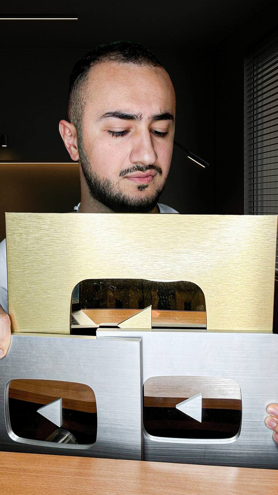
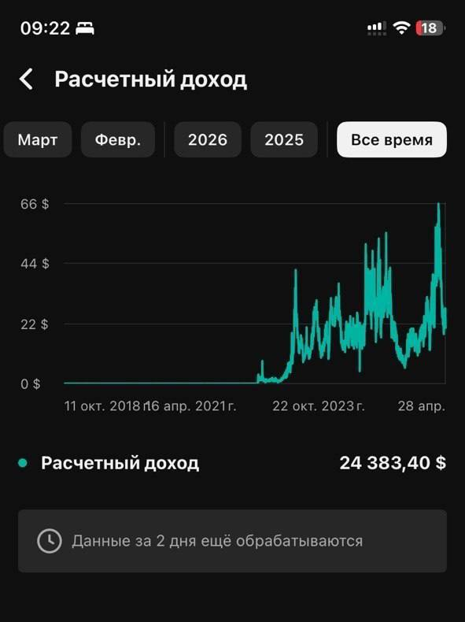
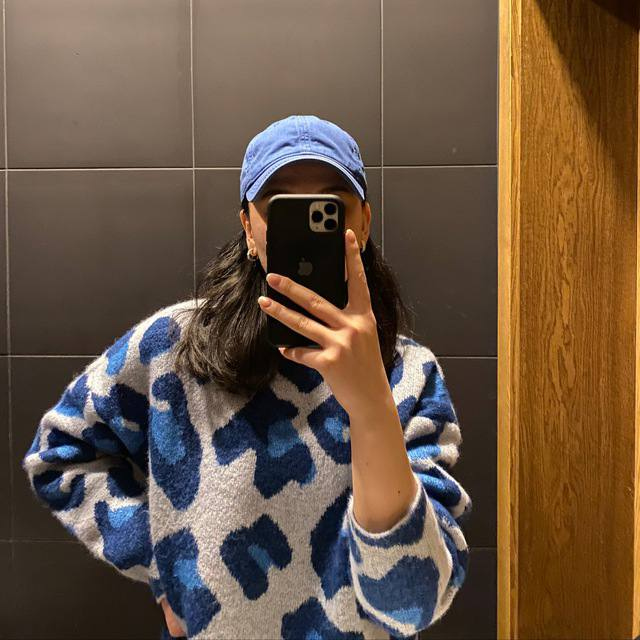
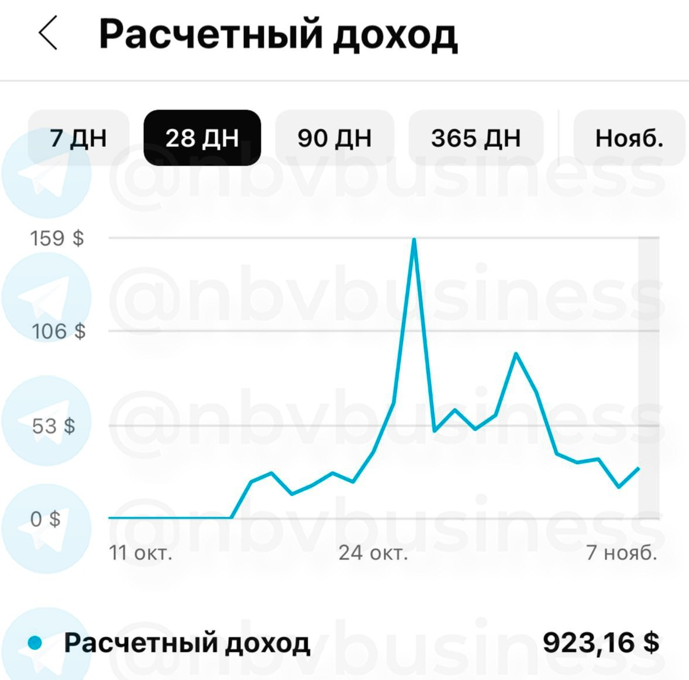
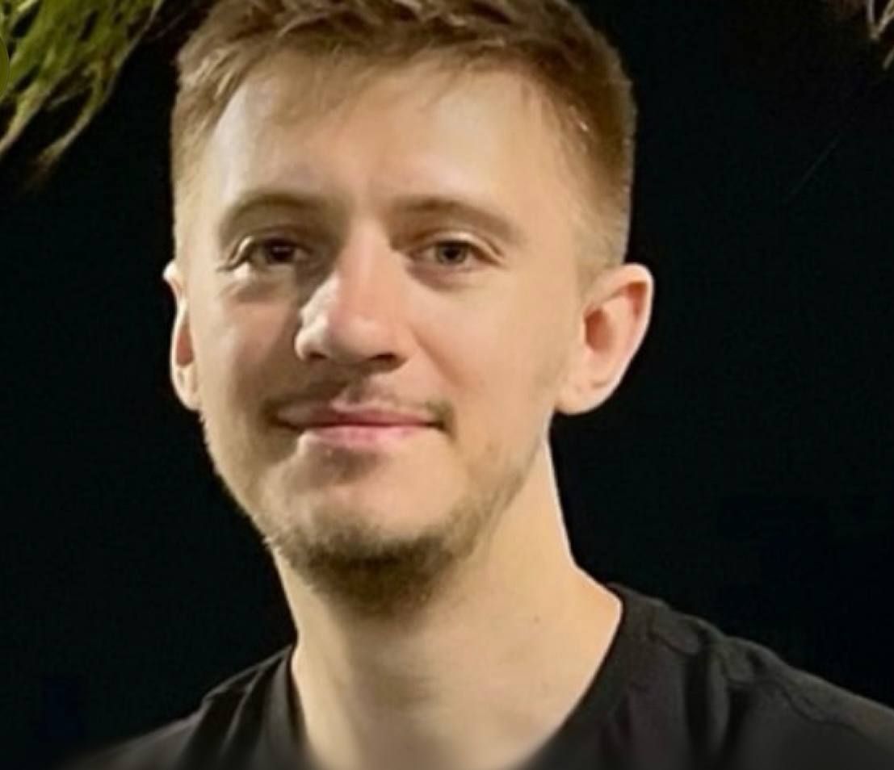

Неделя №1
Постановка целей и дисциплина
Фиксируем цель, выстраиваем рабочий ритм и изучаем материалы программы.
Обучение от Шукура Набиева — автора каналов с более чем 5 млн подписчиков. Получи систему, которая приносит доход, а не случайные просмотры.

Владелец сетки из 20 каналов, начал свой путь в 2017 году и прошёл путь с 0 до 5+ млн подписчиков и стабильного дохода на YouTube. Теперь помогаю своим ученикам строить цифровой актив на Ютуб.
Не теория из книг — реальные кейсы из моих каналов
Индивидуальный подход к каждому ученику
Ученики выходят на результат уже во время обучения
Сопровождение после завершения обучения
Это общий план, но на программе у нас есть персональный план для каждого ученика.
Фиксируем цель, выстраиваем рабочий ритм и изучаем материалы программы.
Находим перспективное направление и утверждаем концепцию будущего канала.
Организуем работу, распределяем задачи и запускаем систему производства контента.
Публикуем ролики и закладываем фундамент первых доходов.
Усиливаем ролики под монетизацию.
Полная система от создания канала до построения команды и масштабирования
Как правильно поставить цель, выбрать нишу, анализировать что зайдёт, а что нет, и запустить канал с нуля до первых результатов
Подбор идей, контент-план, кликабельные превью, SEO-оптимизация каналов и секреты контента, который заходит
Подключение монетизации, вывод денег из любой страны, легализация доходов и апелляции при блокировке
Секреты кликбейта, высокое удержание, попадание в рекомендации, максимальный RPM и грамотный анализ статистики
Построение команды, делегирование процессов, масштабирование и создание сетки каналов
Реальные истории учеников: с какой точки начинали, что хотели получить и к чему пришли.








От самостоятельного старта до личной работы над каналами.
Результат продукта: ученик самостоятельно запускает YouTube-канал, выбирает нишу, публикует ролики и получает первые просмотры, полностью понимая систему выхода на монетизацию.
Выбрать тарифРезультат продукта: ученик запускает и системно ведёт каналы под групповым контролем куратора, выходит на стабильные просмотры с минимизацией рисков и готовой моделью делегирования.
Выбрать тарифРезультат продукта: ученик по персональной стратегии ведёт каналы с помощью ЛИЧНОГО куратора, достигает стабильных просмотров и выстраивает систему масштабирования с командой и готовностью к монетизации.
Выбрать тарифРезультат продукта: ученик совместно с Шукуром запускает неограниченное кол-во каналов, выходит на стабильные просмотры и гарантированно доводит канал(ы) до монетизации или первого дохода с выстроенной системой масштабирования и делегирования.
Выбрать тарифНа тарифе «Менторство»: если за 12 недель не создан канал, не выбрана ниша и не получен доход до монетизации — сопровождение бесплатно продлевается до достижения результата.
Да, большинство наших учеников начинают с нуля, без опыта. Мы разбираем всё с самых азов: выбор ниши, создание канала, работу с ИИ для сценария и монтажа, продвижение
Нет, начать можно без вложений, мы подбираем модель под твою ситуацию: если бюджета нет, показываем, как делать всё самому на старте, используя бесплатные инструменты и нейросети. Ученик Александр вышел на $52.000 без вложений в команду, делая весь контент сам
Достаточно 1-2 часов в день, большинство учеников совмещают обучение с основной работой. Дело не в количестве часов, а в том, что ты делаешь за это время
Да, и это одно из основных направлений, которым мы обучаем. Формат канала без лица работает через закадровый голос, переработанные исходники и монтаж, часто с помощью ИИ для сценария, озвучки и видео. Показывать лицо совсем не обязательно
Да, вся программа построена именно на работе с зарубежной аудиторией, независимо от того, откуда ты сам. Ты создаёшь канал на иностранном языке и монетизируешь его через зарубежный рынок, где выплаты в разы выше, чем на русскоязычном YouTube. Проживание в СНГ этому никак не мешает
Сроки у всех разные и зависят от того, как быстро применяешь материал. Но есть реальные ориентиры: ученик Никита подключил монетизацию за 23 дня и заработал $1.200 за полтора месяца обучения. У большинства первые результаты появляются в течение первого месяца при системной работе
За тобой закреплён куратор, который на связи 7 дней в неделю и отвечает в течение пары минут. А если по итогу обучения на тарифе Партнёрство результата всё же нет, мы бесплатно продлеваем срок, пока ты его не получишь
Длительность зависит от тарифа и составляет от 7 до 12 недель. После завершения программы доступ к базе материалов и возможность обращаться к куратору сохраняются, мы не бросаем учеников сразу после окончания формального срока
Нет, возраст не влияет на то, получится ли разобраться в системе и сделать результат. Ученица Надежда начинала на пенсии полным новичком и всё равно вышла на первые деньги в интернете
Напиши менеджеру в Telegram — ответим на все вопросы и поможем выбрать подходящий тариф
↗ Написать в Telegram